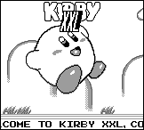
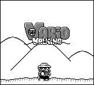

The following snippets are available:
HISCORE1.ZIP: HiScore version 1 - 3K
(RGBASM Source)
This unit helps you in handling those enormously large hi-scores in games. It defines a new datatype, and the required functions to use it, so you don't have to use zilion-bit calculations just to keep track of a score.
SGBCP10.ZIP: SGBCPASS Version 1 - 9K (EXE
& C Source)
This executable converts a SGB Color password into actual RGB-values. This way, you can use the drawing-tools supplied by the SGB itself to determine which color palettes to use for your SGB programs. Includes C Source and password format.
GBLC0997.ZIP: Gameboy
Licencee Codes 9/97 - 6K (MS Word Document)
This is a list of licencee codes which are stored in bytes [014B] or [0144/0145] of each Gameboy cartridge. It was build up by scanning through ROMs, so there is no real certainty these codes are correct.
GB4REAL1.ZIP: GB4Real version 1 - 3K
(RGBASM Source)
There are some big differences between the emulators and the real Gameboy; in short, the real thing is a lot messier and cannot handle certain techniques which are perfectly valid on the emulators. GB4Real tries to bridge this gap by cleaning up and supplying alternatives for things like sprite-handling which work on both the emulators and the real Gameboy.
KIRBYXXL.ZIP: Kirby XXL - 35K (ROM and
RGBASM source)

Kirby XXL shows you how you can set up interrupts in such a way, that different
parts of the screen are handled using different techniques. It is also a good
example on how to use the GBTD Library.
WARWALK1.ZIP: Wario Walking version 1 -
18K (ROM and RGBASM source)
Wario Walking shows how you can use the Gameboy video-hardware to get lots of movement without straining the CPU. It has two levels of scrolling, a multi-framed Wario but still needs to be slowed down a lot to make it look nice..
Note: if you're having trouble implementing GB4Real, you can use this demo
as an example.
ZOOMAR3.ZIP: Zoomar' version 3 - 14K (ROM
and TASM source)
Zoomar' was made to see how the Gameboy would handle a worst-case scenario; it uses real-time zooming, which is very CPU-intensive as the Gameboy video-hardware was not designed for tasks like these. So, if you want to see how that Z80 handles stress, have a look at this demo.
In this package you'll find a pre-compiled ROM, the whole (documented)
source, and yes, it runs on the real Gameboy.. (see the source for more info
about single or multiple frame-mode)